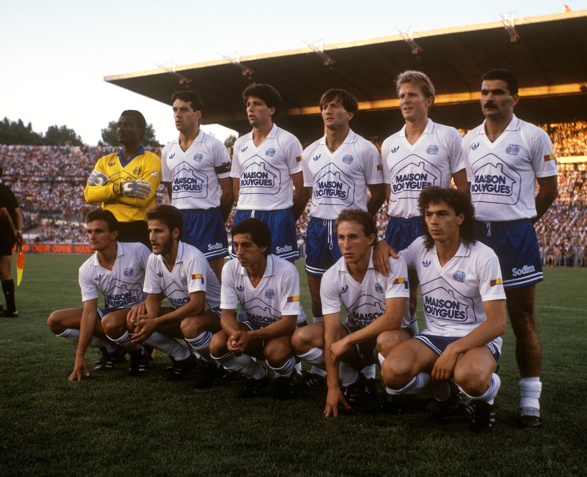
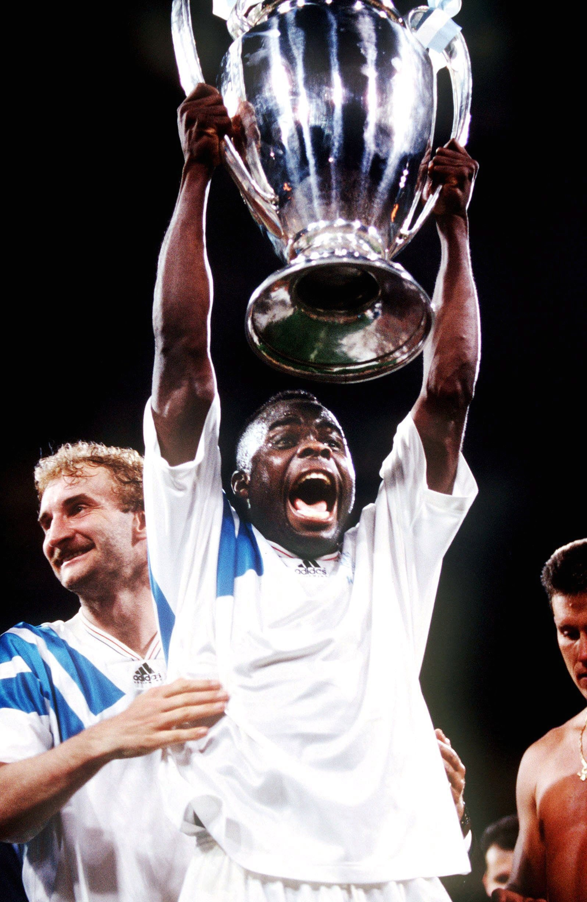

1986 - 1993
LES DÉBUTS DE BERNARD TAPIE
A la fin d’une saison 1985-1986 qui voit l’OM finir à la douzième place de première division, unhomme d’affaires rachète le club phocéen. Un certain Bernard Tapie. L’OM va alors connaître une période couronnée de succès, sûrement la plus belle de son histoire. A l’aube de sa première saison à la tête du club marseillais, Tapie nomme Gérard Banide au poste d’entraîneur et Michel Hidalgo en tant que directeur sportif. Le club phocéen se renforce et recrute Papin, Förster, Domergue, Stambouli, Cubaynes, Brisson, F. Passi, Laurey, Sliskovic et Giresse. LesOlympiens réalisent alors une très bonne saison mais ratent de peu le doublé en terminant deuxième du championnat derrière Bordeaux et sont défaits en finale de la Coupe de France face à… Bordeaux. Environ 30000 spectateurs sont présents au Vélodrome pour chaque match de l’OM, ce qui constitue un record d’affluence. Mais Tapie veut voir son OM au sommet du football français et une quinzaine de joueurs quittent le club, dont les derniers Minots (Anigo, Francini, Di Méco). A contrario, Le Roux, Delamontagne, Lowitz, Allofs, Bouafia et un certain Abédi Pelé sont recrutés. Mais cela ne suffit pas et les Olympiens finissent à la sixième place de D1, de quoi mettre en colère Bernard Tapie. En Coupe de France, les Marseillais sont éliminés dès les 32èmes de finale contre Bastia (1-0). C’est véritablement en Coupe d’Europe des vainqueurs de coupe que les hommes de Banide se mettent en valeur. Les phocéens atteignent les demi-finales mais sont éliminés par le grand Ajax Amsterdam en avril 1988. LE RETOUR DE RAYMOND LA SCIENCE
Tapie nomme Tomislav Ivic au poste d’entraîneur la saison suivante mais Goethals reviendra en octobre. Pardo, Cantona, Germain, Vercruysse, Stojkovic, Fournier et Tigana quittent le club. Angloma, Baills, Xuereb, Durand et Stevens sont recrutés et Deschamps et Sauzée reviennent de prêts. Le trio d’attaque composé de Waddle, Papin et Pelé est redoutable et l’OM est de nouveau champion de première division mais est éliminé en 8ème de finale de la Coupe d’Europe des clubs champions contre le Sparta Prague. La saison 1991-1992 est notamment marquée par le triste drame de Furiani lors de la demi-finale de Coupe de France entre Bastia et l’OM. Mais à l’issue de la saison, des départs majeurs sont enregistrés notamment ceux de Papin, Mozer et Waddle. La fin d’une époque. Tapie obtient alors les signatures de Völler, Bokšić, Ferreri, Eydelie, Desailly, Barthez, Omanbiyik et Martin Vasquez. Goethals laisse sa place à son adjoint Jean Fernandez mais le belge fera son retour en novembre 1992. Malgré le départ de son redoutable buteur Papin, l’OM décroche le graal le 26 mai 1993. Marseille remporte la Coupe d’Europe des clubs champions face au grand Milan AC grâce à un but de la tête de Basile Boli (1-0). L’OM demeure le seul club français à avoir gagné une Coupe d’Europe. A jamais les premiers. Trois jours plus tard, les Olympiens deviennent champions de France pour la cinquième fois d’affilée grâce à une victoire contre le PSG au Vélodrome (3-1). Chiffres clés
2
l’OM réalise son deuxième doublé deson histoire lors de la saison 1988-1989.
6
Jean-Pierre Papin termine meilleur buteurde l’OM en championnat durant six saisons d’affilée.
134
Papin inscrit 134 buts en première divisiondurant sa période olympienne (1986-1992).
5
Les Marseillais remportent le championnatcinq fois d’affilée entre la saison 1988-1989 et 1992-1993.
71
L’OM inscrit 71 buts en première divisionlors de la saison 1992-1993 et possède la meilleure attaque du championnat.